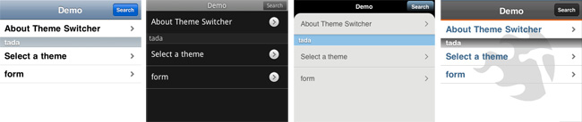

Theme Switcher

iui-theme-switcher.js is an extension for the iUI framework. Its intend is to help you change which iUI theme you want to be used on-the-fly.
Note: this is a replacement of the post 0.4dev3 iUI release theme switcher code, that used to be in iui/js/theme-switcher.js (which is now to consider as obsolete, but can still be used).
Author: Remi Grumeau
Version: 1.1
- Getting Started
- Frequently Asked Questions
- iUI code documentation
- Advanced styling & themes
Like in most open-source projects, the more we are, the meyer it is! HTML/CSS/JS, documentation, design, translation, ...
Don’t be shy
1. Instructions of use
It comes as a JS object, "iui.ts".
1.1. Variables
iui.ts.currentTheme
It is set by iui.ts.init(), updated by iui.ts.setTheme().
This is the theme currently in use. By default, same as iui.ts.defaultTheme.
Ex: "iphone"
iui.ts.defaultTheme
It is set once on load by iui.ts.init().
First link element in the header with a "title" attribute and "rel" attribute equals to "stylesheet".
Ex: "iphone"
iui.ts.themes
It will be set by iui.ts.init() and updated by iui.ts.addTheme() and iui.ts.removeTheme().
Selecting in the header all link elements with "rel" attribute value containing "stylesheet" and an existing title attribute.
Ex: ["iphone", "android", "webos"]
1.2. Functions
iui.ts.init()
Initialized on load.
no parameter
Selecting in the header all link elements with both a "rel" attribute value containing "stylesheet" and an existing title attribute and store their title attribute value in iui.ts.themes array. If "stylesheet" attribute doesn't contain "alternate", both iui.ts.defaultTheme and iui.ts.currentTheme are defined.
iui.ts.setTheme(title)
Set a theme by its title.
- title (string)
It disables all link elements with a "rel" attribute that contains "stylesheet" and a "title" attribute, and enable the one with the "title" attribute value equal to the title name given as a parameter. It will also update iui.ts.currentTheme value to title name given as a parameter.
Ex: iui.ts.setTheme('android');
iui.ts.setDefaultTheme()
Alias to iui.ts.setTheme(iui.ts.defaultTheme)
no parameter
Ex: iui.ts.setDefaultTheme();
iui.ts.rememberTheme()
Remember theme currently in use.
no parameter
It stores iui.ts.currentTheme value in a cookie called 'iui-theme'. The cookie will live a year. Note that iui.ts.init() will activate the theme title value of this cookie over the default one.
Ex: iui.ts.rememberTheme();
iui.ts.addTheme(title, link, setIt)
Add a theme in the DOM.
- title (string)
- link (string)
- setIt (true/false - optional, default is false)
It adds a new link element in the header with 'title' parameter value as "title" attribute value, and 'link' parameter value as "href" attribute value. It also adds/pushes 'title' parameter value to iui.ts.themes array. If setIt is defined as true, iui.ts.setTheme() will be activated with it using this new theme. You can use absolute url as "link" value, theme doesn't have to be in iui/t folder (but it would be cleaner).
Ex: iui.ts.addTheme('nokia', 'nokia-theme.css');
iui.ts.removeTheme(title)
Remove a theme from the DOM.
- title (string)
It removes the link element in the header with 'title' parameter value equal to "title" attribute value. It also removes it from iui.ts.themes array. If you remove the theme currently in use, iui.ts.setDefaultTheme will be used.
Ex: iui.ts.removeTheme('nokia');